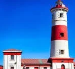
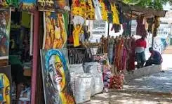
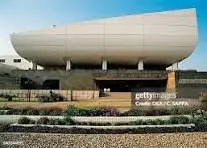
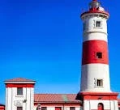
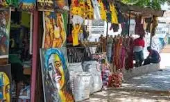
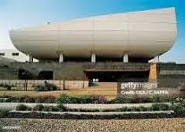

Discover Accra
Explore the capital city of Ghana — its rich history, cultural vibrance, diverse population, and local attractions.
History of Accra
Accra originated from a cluster of Ga fishing villages and later became the capital of the British Gold Coast. The city is known for its colonial architecture and its role in Ghana's independence movement.
Demographics
- Population: 2.3 million (metro)
- Languages: English (official), Ga, Twi, Ewe
- Religion: Christianity, Islam, Traditional
- Economy: Trade, Tech, Education, Tourism
Local Events
Accra hosts a variety of cultural celebrations and festivals including:
- Chale Wote Street Art Festival
- Homowo Festival
- Ghana Independence Day Parade
- Food and Music Festivals
City Gallery

 




